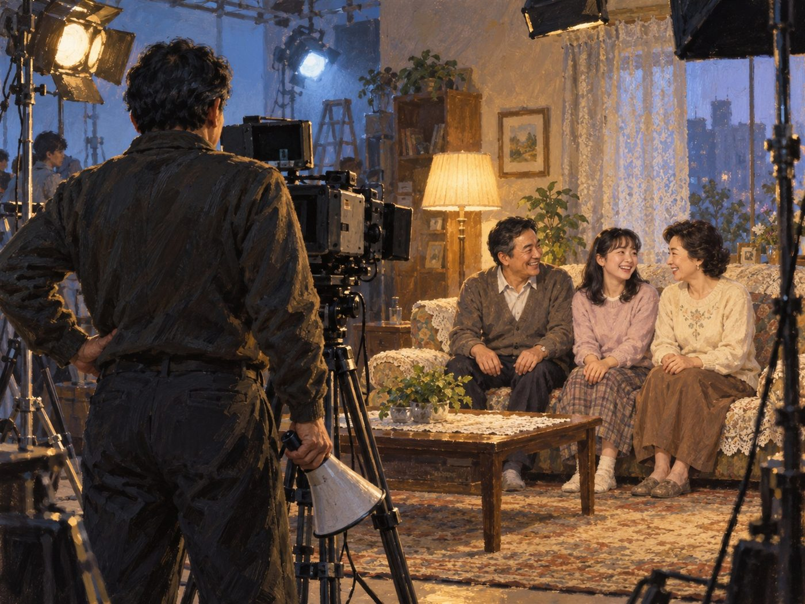

광고·마케팅 업계 뉴스 · 발행인 SM C&C 윤석진
'따봉'과 '아버님 댁에 보일러', 유행어를 찍은 CF 감독

독자 여러분, 오늘은 온 가족이 TV 앞에서 따라 하던 말들을 만든 사람을 소개합니다. 윤석태 감독은 한국 CF계의 전설로 불리는 광고 감독입니다. '여보, 아버님 댁에 보일러 놓아 드려야겠어요'라는 경동보일러 광고, '따봉', '그래, 이 맛이야' 같은 말들이 그의 화면에서 태어났고, 초코파이 '정(情)' 광고도 그가 만든 화제작으로 꼽힙니다. 이 광고들은 제품 설명보다 가족과 이웃 사이의 마음을 먼저 보여 줬습니다. 한 줄 대사가 유행어가 되고, 그 유행어가 다시 브랜드의 이름이 됐지요. 그는 2023년 1월 향년 84세로 세상을 떠났지만, 그가 남긴 말들은 지금도 농담처럼, 인사처럼 우리 입에 살아 있습니다. 숏폼과 밈이 쏟아지는 지금, 그의 작업은 사람들이 따라 하고 싶은 한마디가 얼마나 멀리 가는지 다시 보여 줍니다.